품질경영기사 (2020-09-26 기출문제)
1과목: 실험계획법
1. 교락법에 대한 설명 중 틀린 것은?
- 교락법 배치를 위해 직교배열표를 이용할 수 없다.
- 실험오차를 적게 할 수 있으므로 실험의 정도가 향상된다.
- 교락법을 이용한 실험배치 방법으로 인수분해식과 합동식을 이용한 방법이 많이 사용된다.
- 실험 횟수를 늘리지 않고 실험 전체를 몇 개의 블록으로 나누어 배치할 수 있게 만드는 실험방법이다.
(정답률: 70%)

2. 1 요인 또는 2 요인 실험에서 실험순서가 랜덤하게 정해지지 않고, 실험 전체를 몇 단계로 나누어서 단계별로 랜덤화하는 실험계획법은?
- 교락법
- 일부실시법
- 분할법
- 라틴방격법
(정답률: 73%)
3. 다음과 같은 L4(23) 직교배열표에서 요인 A의 제곱합 (SA)는 얼마인가?
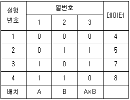
- 3
- 4
- 6
- 9
(정답률: 63%)
4. 다음은 A, B 각 수준조건에서 100개의 물건을 만들어 그 중의 불량품수를 표시한 계수형 2요인 실험의 데이터이다. 오차분산(Ve2)는?
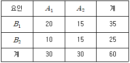
- 0.125
- 0.128
- 0.254
- 0.256
(정답률: 45%)
5. 선형식
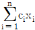
의 제곱합을 표현한 식으로 맞는 것은?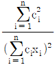
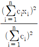
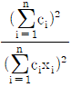
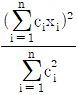
(정답률: 59%)
6. 실험계획에서 필요한 요인에 대한 정보를 얻기 위하여 2요인 이상의 무의미한 고차의 교호작용의 효과는 희생시켜 실험의 횟수를 적게 하도록 고안된 실험계획법은?
- 난괴법
- 요인배치법
- 분할법
- 일부실시법
(정답률: 61%)
7. L27(313)형 직교배열표를 사용할 때, B요인을 3열 기본표시 ab에 배치하고, D요인을 12열 기본표시 ab2c에 배치하였다. B×D는 어떤 기본표시에 나타나는가?
- bc와 bc2
- ac2과 bc
- ac2과 bc2
- bc2과 abc2
(정답률: 61%)
8. 수준수가 4, 반복 3회의 1요인 실험 결과 ST=2.383, SA=2.011 이었으며,
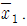
=8.360,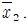
=9.70 이었다. μ(A1)와 μ(A2)의 평균치차를 α=0.01로 구간추정하면 약 얼마인가? (단, t0.99(8)=2.896, t0.995=3.355 이다.)- -1.931 ≤ μ(A1)-μ(A2) ≤ -0.749
- -1.850 ≤ μ(A1)-μ(A2) ≤ -0.830
- -1.758 ≤ μ(A1)-μ(A2) ≤ -0.922
- -1.701 ≤ μ(A1)-μ(A2) ≤ -0.979
(정답률: 30%)
9. 연구소 등에서 신제품 개발을 위해 라인 외 (off line) 품질관리활동에 해당되지 않는 것은?
- 품질 설계
- 샘플링 검사
- 허용차 설계
- 파라미터 설계
(정답률: 57%)
10. 직선회귀에서 데이터가 다음과 같을 때, 단순회귀식으로 맞는 것은?
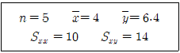
 =0.7+1.3x
=0.7+1.3x =0.7-1.3x
=0.7-1.3x- =0.8+1.4x
 =0.8-1.4x
=0.8-1.4x
(정답률: 64%)
11. 반복 없는 23 요인배치법의 구조모형은 어느 것인가? (단, i, j, k=0, 1, eijk~N(0,
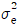
)이고, 서로 독립이다.)- xijk=μ+ai+bj+ei
- xijk=μ+ai+bj+(ab)ij+eijk
- xijk=μ+ai+bj+ck+(abc)ijk+eijk
- xijk=μ+ai+bj+ck+(ab)ij+(ac)ik+(bc)jk+eijk
(정답률: 52%)
12. 다음과 같은 1요인 실험에서 오차항의 자유도는?
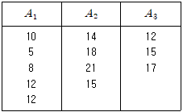
- 9
- 10
- 11
- 12
(정답률: 61%)
13. 다음은 변량요인 A와 B로 이루어진 지분실험법의 분산분석표이다. 여기서
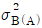
의 추정값은 얼마인가?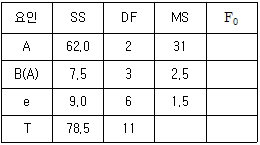
- 0.5
- 1.0
- 1.5
- 2.5
(정답률: 52%)
14. 화학공장에서 수율을 높이려고 농도(A), 온도(B), 시간(C) 3요인을 선정하여 반복없이 실험한 후 분산분석표를 작성하여 유의하지 않는 요인은 풀링하였더니 최종적으로 다음의 분산분석표로 나타났다. 이와 관련된 설명으로 틀린 것은? (단, A, B, C 모두 모수요인이고, F0.95(2, 20)=3.49, F0.99(2, 20)=5.85 이다.)
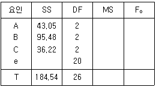
- A, B 요인만 유의하다.
- 반복이 없는 3요인 실험이다.
- 3요인 교호작용이 오차항에 교락되어 있다.
- 오차항에는 2요인 교호작용이 풀링되어 있다.
(정답률: 56%)
15. Y화학공장에서 제품의 수율에 영향을 미칠 것으로 생각되는 반응온도(A)와 원료(B)를 요인으로 2요인 실험을 하였다. 실험은 12회 완전 랜덤화 하였고, 2요인 모두 모수이다. 검정 결과로 맞는 것은? (단, F0.99(3, 6)=9.78, F0.95(3, 6)=4.76, F0.99(2, 6)=10.9, F0.95(2, 6)=5.14 이다.)(오류 신고가 접수된 문제입니다. 반드시 정답과 해설을 확인하시기 바랍니다.)
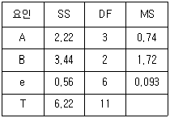
- A는 위험률 1%로 유의하고, B는 위험률 5%로 유의하다.
- A는 위험률 5%로 유의하고, B는 위험률 1%로 유의하다.
- A는 위험률 1%로 유의하지 않고, B는 위험률 5%로 유의하다.
- A는 위험률 5%로 유의하지 않고, B는 위험률 1%로 유의하다.
(정답률: 43%)
16. 반 투명경의 투과율을 측정하기 위하여 측정광원의 파장(A)을 4수준 지정하고 다수의 측정자로부터 랜덤으로 4명(B)을 뽑아 반복이 없는 2요인 실험을 행하고, 그 결과를 분산분석한 결과 다음 표를 얻었다. 측정자에 의한 분산성분의 추정치
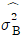
의 값은 약 얼마인가?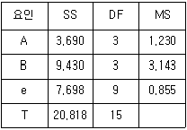
- 0.322
- 0.507
- 0.572
- 0.763
(정답률: 46%)
17. 1차 단위가 1요인 실험인 단일분할법의 특징 중 틀린 것은?
- 2차 단위 요인이 1차 단위 요인보다 더 정도가 좋게 추정된다.
- A, B 두 요인 중 수준의 변경이 어려운 요인은 1차 단위에 배치한다.
- 1차 단위 오차는 l(m-1)(r-1)이고, 2차 단위 오차는 (l-1)(r-1)이다.
- 1차 단위 요인과 2차 단위 요인의 교호작용은 2차 단위에 속하는 요인이 된다.
(정답률: 69%)
18. 3×3 라틴방격법에서 그림 ㉠~㉣에 관한 설명으로 틀린 것은?
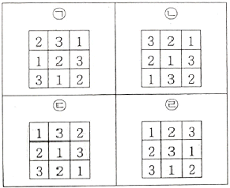
- ㉠과 ㉡은 직교이다.
- ㉡과 ㉢은 직교이다.
- ㉠과 ㉢은 직교가 아니다.
- ㉠과 ㉣은 직교가 아니다.
(정답률: 40%)
19. 완전랜덤화배열법(completely ramdomized designs)의 모수모형(fixed effect model)으로 구조식이 다음과 같을 때 틀린 것은?
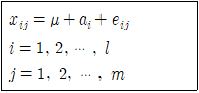
- E(eij)=0
- E(ai)=0
- Var(eij)=

- a1+a2+…+al=0
(정답률: 61%)
20. 혼합모형(A: 모수, B: 변량)일 때 반복 있는 2요인 실험의 구조식에서 조건으로 틀린 것은?
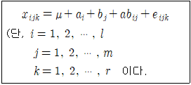
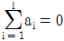
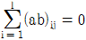
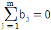
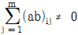
(정답률: 53%)
2과목: 통계적품질관리
21. 어떤 사무실에 공기청정기를 설치하기 이전과 설치한 이후의 실내 미세먼지에 대한 자료가 다음과 같다. 공기청정기 설치 전과 후의 평균치 차를 검정하기 위한 검정통계량은 약 얼마인가? (단,
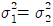
이다.)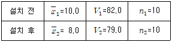
- 0.473
- 0.498
- 0.669
- 0.7⑤
(정답률: 55%)
22.  관리도에서 n=4, UCL=52.9, LCL=47.74 일 때
관리도에서 n=4, UCL=52.9, LCL=47.74 일 때
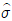
의 값은? (단, n=4 일 때 d2=2.⑤9 이다.)- 1.52
- 1.72
- 2.02
- 2.58
(정답률: 50%)
23. 관리도의 OC곡선에 관한 설명으로 틀린 것은?
- 공정이 관리상태일 때 OC곡선은 제1종 오류(α)를 나타낸다.
- 공정이 이상상태일 때 OC곡선은 제2종 오류(β)를 나타낸다.
- OC곡선은 관리도가 공정변화를 얼마나 잘 탐지하는가를 나타낸다.
 관리도의 경우 정규분포의 성질을 이용하여 OC곡선을 활용할 수 있다.
관리도의 경우 정규분포의 성질을 이용하여 OC곡선을 활용할 수 있다.
(정답률: 37%)
24. 샘플링 검사의 OC곡선에 관한 설명으로 가장 거리가 먼 것은?
- 샘플의 크기 n과 합격판정개수 c를 각각 2배씩 하여 주면 OC곡선은 크게 변한다.
- 로트의 크기 N과 합격판정개수 c가 일정할 때 샘플의 크기 n이 증가하면 OC곡선의 경사는 점점 급하게 된다.
- 샘플의 크기 n과 합격판정개수 c가 일정하고, 로트의 크기 N이 10n 이상 크면 OC곡선에 큰 변화가 있다.
- 샘플의 크기 n과 로트의 크기 N이 일정하고 합격판정개수 c가 증가하면 OC곡선은 오른쪽으로 완만해진다.
(정답률: 57%)
25. 관리도에 대한 설명으로 맞는 것은?
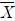
관리도의 검출력은 주로 군의 크기 k와 군내변동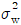
과 관계가 있다.- u 관리도에서는 n의 크기가 변해도 관리한계선의 폭은 변하지 않는다.
- n=3, k=30의
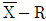
관리도에서 관리계수 Cf=1.35라면 공정이 관리상태라고 할 수 있다. - 공정이 관리상태일 때에는 도수분포로부터 구한 표준편차와 R관리도의
 로부터 얻어진 표준편차는 대체적으로 일치한다.
로부터 얻어진 표준편차는 대체적으로 일치한다.
(정답률: 44%)
26. 계수형 샘플링검사 절차 - 제3부: 스킵로트 샘플링검사 절차(KS Q ISO 2859-3)를 사용하는 경우 최초 검사빈도를 1/3로 결정되었다면 자격인정에 필요한 로트의 개수는?
- 10개 내지 11개
- 12개 내지 14개
- 15개 내지 20개
- 21개 내지 25개
(정답률: 32%)
27. 모집단을 여러개의 층(層)으로 나누고 그중에서 일부를 랜덤샘플링(random sampling)한 후 샘플링된 층에 속해 있는 모든 제품을 조사하는 샘플링 방법은?
- 집락샘플링(cluster sampling)
- 층별샘플링(stratified sampling)
- 계통샘플링(systematic sampling)
- 단순랜덤샘플링(simple random sampling)
(정답률: 45%)
28. 통계량으로부터 모집단을 추정할 때 모집단의 무엇을 추측하는 것인가?
- 모수
- 정수
- 통계량
- 기각치
(정답률: 64%)
29. 어떤 제품의 품질특성에 대해 σ2에 대한 95% 신뢰구간을 구하였더니 1.65≤σ2≤6.20 이었다. 이 품질특성을 동일한 데이터를 활용하여 귀무가설(H0) σ2=8, 대립가설(H1) σ2≠8 로 하여 유의수준 0.⑤로 검정하였다면, 귀무가설(H0)의 판정 결과는?
- 기각한다.
- 보류한다.
- 채택한다.
- 판정할 수 없다.
(정답률: 64%)
30. 5대의 라이도를 하나의 시료 군으로 구성하여 25개 시료 군을 조사한 결과 195개의 부적합이 발견되었다. 이 때 c관리도와 u관리도의 UCL은 각각 약 얼마인가?
- 7.8, 1.56
- 16.18, 5.31
- 16.18, 3.24
- 57.73, 5.31
(정답률: 36%)
31. 어느 제조회사의 2개 공정라인이 있는데 평균 생산량의 차이를 추정하고자 10일 동안 생산량을 측정하였더니 다음과 같았다. 2개 라인의 모평균 μ1-μ2에 대한 95% 신뢰구간을 구하면 약 얼마인가? (단, t0.975(18)=2.101, t0.995(18)=2.878 이고, 생산량은 등분산이며, 정규분포를 한다고 가정한다.)
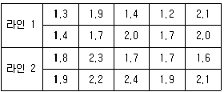
- -0.574 ~ 0.006
- -0.574 ~ -0.006
- -0.679 ~ 0.099
- -0.679 ~ -0.099
(정답률: 41%)
32. 한국, 미국, 중국 세 나라별로 좋아하는 것에 차이가 있는지 다음과 같은 분할표를 활용하여 독립성 검정하고자 할 때 검정 과정 중 잘못된 것은? (문제 오류로 가답안 발표시 1번으로 발표되었지만 확정 답안 발표시 1, 2번이 정답처리 되었습니다. 여기서는 가답안인 1번을 누르면 정답 처리 됩니다.)
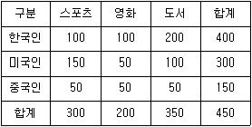
- 자유도는 9-2=7이다.
- 미국인이 영화를 좋아할 기대도수는 (200×300)/450=133.333 이다.
- 검정통계량 카이제곱은 각 항별로 (측정개수-기대도수)2/기대도수 를 계산하여, 모두 더한 것이다.
- 한국인이 스포츠를 좋아할 확률은 (좋아하는 것에서 스포츠 선택될 확률)×(사람 중 한국인이 선택될 확률) 이다.
(정답률: 63%)
33. 부적합률에 대한 계량형 축차 샘플링검사 방식(표준편차 기지)(KS Q ISO 39511:2018)에서 양쪽 규격한계의 결합관리인 경우 상한 합격판정치(AU)를 구하는 식은?
- gσncum+hAσ
- gσncum-hAσ
- (U-L-gσ)ncum+hAσ
- (U-L-gσ)ncum-hAσ
(정답률: 35%)
34. 어떤 부품공장에서 제조되는 부품의 특성치의 분포가 μ=3.10mm, σ=0.02mm인 정규분포를 따르며, 공정은 안정 상태에 있다. 부품의 규격이 3.10±0.0392mm로 주어졌을 경우, 이 공정에서 발생되는 부적합품의 발생률은 약 얼마인가?
- 2.5%
- 5.0%
- 95.0%
- 97.5%
(정답률: 42%)
35. 관리도의 사용목적에 해당되지 않는 것은?
- 공정해석
- 공정관리
- 표본 크기의 결정
- 공정이상의 유무 판단
(정답률: 60%)
36. 모부적합수(m)에 대한 신뢰상한값만을 추정하는 식으로 맞는 것은?
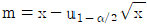
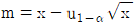
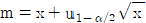
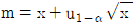
(정답률: 48%)
37. 계량 규준형 1회 샘플링 검사에 대한 설명으로 맞는 것은?
- 계량 샘플링 검사는 로트 검사단위의 특성치 분포가 정규분포가 아니어도 된다.
- 샘플의 크기가 같을 때에는 계수치의 데이터가 계량치의 데이터보다 많은 정보를 제공한다.
- 계량 샘플링검사에서 표준편차가 미지인 경우이든 기지인 경우이든 샘플의 크기는(n)는 같다.
- 계량 샘플링 검사는 측정한 데이터를 기초로 판정하는 것으로서 계수 샘플링 검사에 비하여 샘플의 크기는 적어진다.
(정답률: 31%)
38. 반응온도(x)와 수율(y)과의 관계를 조사한 결과 Sxx=147.6, Syy=56.9, Sxy=80.4 이었다. 회귀로 부터의 제곱합(Sy/x)은 약 얼마인가?
- 10.354
- 13.1⑤
- 43.795
- 56.942
(정답률: 43%)
39. 대형 컴퓨터 네트워크를 운영하는 A씨는 하루 동안의 네트워크 장애건수 X에 대한 확률분포를 다음과 같이 구하였다. X의 기대값 μ와 표준편차 σ는 약 얼마인가?
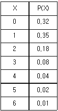
- μ=1.25, σ=1.295
- μ=1.25, σ=1.421
- μ=1.27, σ=1.295
- μ=1.27, σ=1.421
(정답률: 40%)
40. 재가공이나 폐기 처리비를 무시할 경우, 부적합품 발생으로 인한 손실비용(무검사 비용)을 맞게 표시한 것은? (단, N은 전체 로트 크기, a는 개당 검사비용, b는 개당 손실비용, p는 부적합품률이다.)
- aN
- bN
- apN
- bpN
(정답률: 60%)
3과목: 생산시스템
41. 지수평활 모델을 위한 평활상수(α)값의 결정에 관한 설명으로 맞는 것은?
- 수요증가의 속도가 빠를수록 낮게 설정한다.
- 과거의 자료를 무시하고 최근의 자료로 평가한다.
- α값이 클수록 과거 예측치의 가중치가 높아진다.
- 0과 1 사이의 값으로 자료를 예측에 반영하는 가중치이다.
(정답률: 50%)
42. MRP시스템의 로트사이즈 결정방법에 대한 설명으로 틀린 것은?
- 고정주문량 방법은 명시된 고정량으로 주문한다.
- 대응발주 방법은 해당기간에 순 소요량으로 주문한다.
- 최소단위비용 방법은 총비용(준비비용+재고유지비용)을 최소화시키는 양으로 주문한다.
- 부분기간 방법은 재고유지비와 작업준비비(주문비)가 균형화되는 점을 고려하여 주문한다.
(정답률: 35%)
43. 총괄 생산 계획(APP) 기법 중 휴리스틱 계획 기법인 것은?
- 선형결정기법(LDR)
- 선형계획법(LP)에 의한 생산계획
- 수송계획법(TP)에 의한 생산계획
- 매개변수에 의한 생산계획법(PPP)
(정답률: 35%)
44. 고정주문량모형과 고정주문주기모형의 비교 설명으로 틀린 것은?
- 고정주문량모형은 P시스템이고, 고정주문주기모형은 Q시스템이다.
- 고정주문량모형은 주문시기가 일정하지 않고, 고정주문주기모형은 정기적으로 주문한다.
- 고정주문량모형은 고가의 단일품목에 적용하며, 고정주문주기모형은 저가의 여러 품목에 적용한다.
- 고정주문량모형은 재고수준 파악을 수시로 하고, 고정주문주기모형은 재고수준 파악을 정기적 검사에 의한다.
(정답률: 42%)
45. 동작경제의 원칙 중 신체사용의 원칙이 아닌 것은?
- 가급적이면 낙하투입장치를 사용한다.
- 휴식시간을 제외하고는 양손이 동시에 쉬지 않도록 한다.
- 두 손의 동작은 같이 시작하고 같이 끝나도록 한다.
- 두 팔의 동작은 동시에 서로 반대방향으로 대칭적으로 움직이도록 한다.
(정답률: 49%)
46. 도요타 생산방식의 운영에 관한 설명으로 틀린 것은?
- 밀어내기식의 자재흐름방식을 추구한다.
- JIT 생산을 유지하기 위해 간판방식을 적용한다.
- 조달기간을 줄이기 위해 생산준비시간을 축소한다.
- 작업의 유연성을 위해 다기능 작업자 제도를 실시한다.
(정답률: 59%)
47. 워밍업이 필요한 작업에서 정상작업 페이스(pace)에 도달하는데 필요한 것보다 적은 수량을 생산함으로써 발생하는 초과시간을 보상하기 위한 여유는?
- 조여유
- 기계간섭여유
- 소 lot 여유
- 장 cycle 여유
(정답률: 54%)
48. 작업방법의 개선을 위해서 제품이 어떤 과정 혹은 순서에 따라 생산되는지를 분석⋅조사하는데 활용되는 도표가 아닌 것은?
- 흐름공정도(Flow Process Chart)
- 작업공정도(Operation Process Chart)
- 조립공정도(Assembly Process Chart)
- 부문상호관계표(Activity Relationship Diagram)
(정답률: 56%)
49. 다음 표는 정상상태로 추진되는 작업과 특급상태로 추진되는 작업의 기간과 비용을 나타내고 있다. 비용구배(cost slope)는?
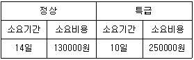
- 10000원
- 20000원
- 30000원
- 40000원
(정답률: 53%)
50. 자재관리에서 구매하는 자재의 가격이 결정되는 원리가 아닌 것은?
- 원가계산에 의한 가격 결정
- 수요와 공급에 따른 가격 결정
- 소비자의 요구에 따른 가격 결정
- 타사와의 경쟁관계에 따른 가격 결정
(정답률: 59%)
51. 5개의 요소작업으로 이루어진 작업을 스톱워치로 10번 관측한 자료가 다음과 같다. 신뢰도 90%, 허용오차 ±5%일 때 적합한 관측횟수는? (단, t0.⑤(9)=1.833 이다.)
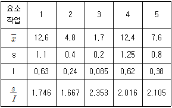
- 19번
- 21번
- 23번
- 25번
(정답률: 15%)
52. 설비를 예정한 시기에 점검, 시험, 급유, 조정, 분해정비, 계획적 수리 및 부분품 갱신 등을 하여 설비성능의 저하와 고장 및 사고를 미연에 방지하고 설비의 성능을 표준 이상으로 유지하는 보전활동은?
- 예방보전
- 사후보전
- 개량보전
- 수리보전
(정답률: 59%)
53. 테일러 시스템과 포드 시스템을 비교⋅분석한 내용으로 틀린 것은?
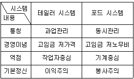
- 통칭
- 경영이념
- 역점
- 기본정신
(정답률: 49%)
54. 라인 밸런싱(Line Balancing)에 관한 내용과 가장 거리가 먼 것은?
- 공정의 효율을 도출한다.
- 작업배정의 균형화를 뜻한다.
- 조립라인의 균형화를 뜻한다.
- 체계적 설비배치(SLP) 기법을 이용한다.
(정답률: 36%)
55. 설비의 최적수리주기 결정 요인이 아닌 것은?
- 보전비
- 열화손실비
- 수리한계
- 설비획득비용
(정답률: 48%)
56. 기업의 산출물인 재화나 서비스에 대한 수량, 시기 등의 미래 시장수요를 추정하는 예측의 유형을 무엇이라 하는가?
- 경제예측
- 수요예측
- 사회예측
- 기술예측
(정답률: 59%)
57. 생산시스템의 투입(input)단계에 대한 설명으로 가장 적합한 것은?
- 변환을 통하여 새로운 가치를 창출하는 단계이다.
- 필요로 하는 재화나 서비스를 산출하는 단계이다.
- 기업의 부가가치창출 활동이 이루어지는 구조적 단계이다.
- 가치창출을 위하여 인간, 물자, 설비, 정보, 에너지 등이 필요한 단계이다.
(정답률: 62%)
58. 설비 선정 시 표준품을 대량으로 연속 생산할 경우 어떤 기계설비를 사용하는 것이 가장 유리한가?
- 범용기계설비
- 전용기계설비
- GT(Group Technology)
- FMS(Flexible Manufacturing System)
(정답률: 53%)
59. 두 대의 기계를 거쳐 수행되는 작업들의 총 작업시간을 최소화하는 투입순서를 결정하는데 가장 중요한 것은?
- 작업의 납기순서
- 투입되는 작업자의 수
- 공정별⋅작업별 소요시간
- 시스템 내 평균 작업 수
(정답률: 59%)
60. 일정계획의 주요 기능에 해당되지 않는 것은?
- 작업 할당
- 작업 설계
- 작업 독촉
- 작업우선순위 결정
(정답률: 41%)
4과목: 신뢰성관리
61. 신뢰성에 관한 설명 중 틀린 것은?
- 평균수명이 증가하면 신뢰도도 증가한다.
- MTTF는 수리 불가능한 아이템의 고장수명 평균치이다.
- MTBF는 수리가능한 아이템의 고장간 동작시간의 평균치이다.
- 여러 개의 부품이 조합된 기기의 고장확률밀도함수는 정규분포를 따른다.
(정답률: 40%)
62. 생산단계에서 초기고장을 제거하기 위하여 실시하는 시험은?
- 내구성 시험
- 신뢰성 성장 시험
- 스크리닝 시험
- 신뢰성 결정 시험
(정답률: 55%)
63. 고장이 랜덤하게 발생하는 20개의 전자부품 중 5개가 고장 날 때까지 수명시험을 실시한 결과 216, 384, 492, 783, 1010 시간에 각각 한개씩 고장 났다. 이 부품의 평균고장률은 약 얼마인가?
- 2.22×10-4 / 시간
- 2.77×10-4 / 시간
- 3.30×10-4 / 시간
- 4.51×10-5 / 시간
(정답률: 52%)
64. 신뢰성은 시간의 경과에 따라 저하된다. 그 이유에는 사용시간 또는 사용횟수에 따른 피로나 마모에 의한 것과 열화현상에 의한 것들이 있다. 이와 같은 마모와 열화현상에 대하여 수리 가능한 시스템을 사용 가능한 상태로 유지시키고, 고장이나 결함을 회복시키기 위한 제반조치 및 활동은?
- 가동
- 보전
- 추정
- 안정성
(정답률: 60%)
65. 지수분포를 따르는 어떤 부품의 고장률이 0.01/시간인 2개가 병렬로 연결되어 있는 시스템의 평균수명은?
- 125시간
- 150시간
- 200시간
- 300시간
(정답률: 39%)
66. 지수분포의 수명을 갖는 어떤 부품 10개를 수명시험하여 100시간이 되었을 때 시험을 중단하였다. 고장 난 부품의 수는 4개였고, 평균수명은 200시간으로 추정되었다. 이 부품을 100시간 사용한다면 누적고장확률은 약 얼마인가?
- 0.0⑤0
- 0.3935
- 0.5000
- 0.6077
(정답률: 33%)
67. 리던던시 구조 중 구성품이 규정된 기능을 수행하고 있는 동안 고장 날 때까지 예비로써 대기하고 있는 것은?
- 활성리던던시
- 직렬리던던시
- 대기리던던시
- n중 k시스템
(정답률: 62%)
68. 수명데이터를 분석하기 위해서는 먼저 그 데이터의 분포를 알아야 하는데 분포의 적합성 검정에 사용할 수 없는 것은?
- 최우추정법
- Bartlett 검정
- 카이제곱 검정
- Kolmogorov-Smirnov 검정
(정답률: 36%)
69. 시스템의 FT(Fault Tree)도가 그림과 같을 때 이 시스템의 블럭도로 맞는 것은?
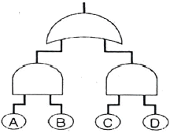
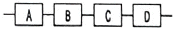
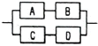
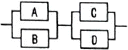
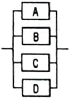
(정답률: 50%)
70. 표본의 크기가 n일 때 시간 t를 지정하여 그때까지의 고장수를 r이라고 하면, 시간 t에 대한 신뢰도 R(t)의 점추정치를 맞게 표현한 것은?
- n / r
- r / n
- (n-r) / r
- (n-r) / n
(정답률: 44%)
71. 고장해석기법에 관한 사항으로 틀린 것은?
- 신뢰성과 안전성은 서로 밀집한 관계를 가지고 있다.
- 고장이나 안전성의 원인분석은 상황과 무관하게 결정한다.
- 고장이나 안전성의 예측 방법으로 FMEA, FTA 등이 많이 사용된다.
- 고장해석에 따라 제품의 고장을 감소시킴과 동시에 고장으로 인한 사용자의 피해를 감소시키는 것이 안전성 제고이다.
(정답률: 57%)
72. 와이블 확률지에서 가로축과 세로축이 표시하는 것으로 맞는 것은?
- (t, InIn[1-F(t)])
- (t, -In[1-F(t)])
- (In t, -InIn[1-F(t)])
- (In t, In(-In[1-F(t)]))
(정답률: 43%)
73. 고장분포함수가 지수분포인 부품 n개의 고장시간이 t1, t2, …, tn 으로 얻어졌다. 평균고장시간(MTBF 또는 MTTF)에 대한 추정치로 맞는 것은? (단, t(i)는 i번째 순서통계량이다.)
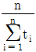
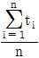
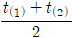
- n이 홀수일 때
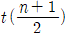
,
n이 짝수일 때
(정답률: 55%)
74. 계수 1회 샘플링 검사(MIL-STD-690B)에 의하여 총시험시간을 9000시간으로 하여 고장개수가 0개이면 로트를 합격시키고 싶다. 로트허용 고장률이 0.0001/시간인 로트가 합격될 확률은 약 몇 %인가?
- 10.04%
- 20.04%
- 30.66%
- 40.66%
(정답률: 38%)
75. 4개의 브레이크 라이닝을 마모실험을 하여 수명을 측정하였더니, 200, 270, 310, 440시간으로 나타났다. 270시간에서의 평균순위법의 F(t)는 얼마인가?
- 0.3333
- 0.3667
- 0.4000
- 0.6667
(정답률: 37%)
76. 설비의 가용도(Availability)에 대한 설명으로 틀린 것은?
- 수리율이 높아지면 가용도는 낮아진다.
- 신뢰도와 보전도를 결합한 평가척도이다.
- 어느 특정순간에 기능을 유지하고 있을 확률이다.
- 가용도는 동작가능시간/(동작가능시간+동작불가능시간)이다.
(정답률: 48%)
77. 부품의 고장률이 CFR이고, 평균수명이 각각 100시간인 2개의 부품이 직렬결합모형으로 만들어진 장치를 50시간 사용한 경우 신뢰도는 약 얼마인가?
- 0.3679
- 0.3906
- 0.6126
- 0.6313
(정답률: 42%)
78. 가속계수가 12인 가속수준에서 총시료 10개 중 5개의 부품이 고장났을 때, 시험을 중단하여 다음의 데이터를 얻었다. 정상 사용조건에서의 평균수명은? (단, 이 부품의 수명은 가속수준과 상관없이 지수분포를 따른다.)
- 59.4hr
- 356.4hr
- 2553.6hr
- 8553.6hr
(정답률: 41%)
79. 간섭이론의 부하강도 모델에서 부하는 평균 μX, 표준편차 σX인 정규분포에 따르고, 강도는 평균 μY, 표준편차 σY인 정규분포에 따른다. nY, nX는 μX로부터의 거리를 나타낼 때, 안전계수 m을 구하는 식은?
(정답률: 45%)
80. 대기 시스템에서 대기 중인 부품의 고장율을 0으로 가정하는 시스템은?
- hot standby
- warm standby
- cold standby
- on-going standby
(정답률: 40%)
5과목: 품질경영
81. 산업표준화 유형 중 국면에 따른 표준화 분류의 내용으로 틀린 것은?
- 기본규격 : 표준의 제정, 운용, 개폐절차 등에 대한 규격
- 제품규격 : 제품의 형태, 치수, 재질 등 완제품에 사용되는 규격
- 방법규격 : 성분분석 및 시험방법, 제품의 검사방법, 사용방법에 대한 규격
- 전달규격 : 계량단위, 제품의 용어, 기호 및 단위 등 물질과 행위에 관한 규격
(정답률: 34%)
82. 품질보증(QA)활동 중 제품기획의 단계에 관한 설명으로 틀린 것은?
- 시장단계에서 파악한 고객의 요구를 일상용어로 변환시키는 단계이다.
- 새로 사용될 예정인 부품에 대하여 신뢰성 시험을 선행 실시하여 품질을 확인한다.
- 신제품을 기획하고 있는 동안 기획 이후의 스텝에서 발생될 우려가 있는 문제점을 찾아내는 단계이다.
- 기획은 QA의 원류에 위치하므로 품질에 관해서 예상되는 기술적인 문제점은 될 수 있는 대로 많이 찾아내도록 한다.
(정답률: 33%)
83. 국제표준화기구(ISO)에 대한 설명 중 틀린 것은?
- ISO의 대표적인 표준은 ISO 9001 패밀리 규격이다.
- ISO의 공식 언어는 영어, 불어, 서반아어이다.
- ISO의 회원은 정회원, 준회원 및 간행물 구독회원으로 구분된다.
- ISO의 설립 목적은 상품 및 서비스의 국제적 교환을 촉진하고, 지적, 과학적, 기술적, 경제적 활동 분야에서의 협력 증진을 위하여 세계의 표준화 및 관련 활동의 발전을 촉진시키는 데 있다.
(정답률: 48%)
84. 개선활동에 있어서 부적합항목 등에 대해 개별도수 또는 개별손실금액 및 그 누적상대도수 등을 막대그래프와 꺾은선그래프를 사용하여 나타내는 것으로 중점관리항목을 도출할 목적으로 활용하는 도구는?
- 체크시트
- 특성요인도
- 파레토도
- 히스토그램
(정답률: 40%)
85. 품질경영을 효율적으로 추진하기 위해 많은 공장에서는 5S 운동을 전개한다. 5S에 해당하지 않는 것은?
- 정리
- 청결
- 습관화
- 단순화
(정답률: 45%)
86. 제조물 책임(PL)법에 의한 손해배상 책임을 지는 자가 면책을 받는 사유로 볼 수 없는 것은? (단, 제조물을 공급한 후에 결함 사실을 알아서 그 결함으로 인한 손해의 발생을 방지하기 위하여 적절한 조치를 취한 경우이다.)
- 제조업자가 해당 제조물을 공급하지 아니하였다는 사실을 입증한 경우
- 제조업자가 판매를 위해 생산하였으나 일부만 유통되었음을 입증한 경우
- 제조업자가 당해 제조물을 공급할 당시의 과학⋅기술 수준으로는 결함의 존재를 발견할 수 없었다는 사실을 입증한 경우
- 제조물의 결함이 제조업자가 해당 제조물을 공급한 당시의 법령에서 정하는 기준을 준수함으로써 발생하였다는 사실을 입증한 경우
(정답률: 55%)
87. 원자재나 제조공정 또는 제품의 규격 등 소정의 품질수준을 확보하지 못한 제품생산에 따른 추가 재작업에 소요되는 품질비용은?
- 예방비용(P-cost)
- 결품비용(S-cost)
- 실패비용(F-cost)
- 평가비용(A-cost)
(정답률: 50%)
88. 국가표준으로만 구성된 것은?
- GB, DIN, JIS, NF
- IS, ISO, DIN, ANSI
- KS, DIN, MIL, ASTM
- KS, JIS, ASTM, ANSI
(정답률: 48%)
89. 다음과 같은 규격의 3가지 부품 A, B, C를 이용하여 B+C-A와 같이 조립할 경우 이 조립품의 허용차는?
- ±0.⑤0
- ±0.060
- ±0.070
- ±0.110
(정답률: 51%)
90. 파라슈라만 등(Parasuraman, Berry&Zeuthaml)에 의해 제시된 서비스 품질 측정도구인 SERVQUAL 모형의 5가지 품질특성에 해당되지 않는 것은?
- 신뢰성(reliability)
- 확신성(assurance)
- 유용성(usefulness)
- 반응성(responsiveness)
(정답률: 38%)
91. 6시그마 품질혁신운동에서 사용하는 시그마 수준 측정과 공정능력지수(CP)의 관계를 맞게 설명한 것은?
- 시그마 수준과 공정능력지수는 차원이 다르기 때문에 상호간에 관련성이 없다.
- 시그마 수준은 공정능력지수에 3을 곱하여 계산할 수 있다. 즉 CP값이 1이면 3시그마 수준이 된다.
- 시그마 수준은 부적합품률에 대한 관계를 나타내고, 공정능력지수는 적합품률을 나타내는 능력이므로 시그마 수준과 공정능력지수는 반비례 관계이다.
- 시그마 수준에서 사용하는 표준편차는 장기표준편차로 계산되고 공정능력지수의 표준편차는 군내변동에 대한 단기 표준편차로 계산되므로 공정능력지수는 기술적 능력을, 시그마 수준은 생산수준을 나타내는 지표가 된다.
(정답률: 42%)
92. 카노(Kano)의 고객만족모형 중 충족이 되면 만족을 주지만 충족이 되지 않아도 불만을 일으키지 않는 요인은?
- 역 품질특성
- 일원적 품질특성
- 당연적 품질특성
- 매력적 품질특성
(정답률: 49%)
93. Y제품의 두께규격이 12.0±0.⑤cm이다. 이 제품을 제조하는 공정의 표준편차가 σ=0.02이면, 이 공정의 제품에 대한 공정능력지수(CP)에 관한 설명으로 맞는 것은?
- 규격공차를 줄여야 한다.
- 공정상태가 매우 만족스럽다.
- 공정능력이 부족한 상태이다.
- ±4σ의 공정능력을 갖추고 있다.
(정답률: 30%)
94. 사내표준화에 대한 설명으로 틀린 것은?
- 하나의 기업 내에서 실시하는 표준화 활동이다.
- 일단 정해진 표준은 변경됨이 없이 계속 준수되어야 한다.
- 정해진 사내표준은 모든 조직원이 의무적으로 지켜야 한다.
- 사내 관계자들의 합의를 얻은 다음에 실시해야 하는 활동이다.
(정답률: 54%)
95. 품질에 대하여 구성원들의 품질개선 의욕을 불러일으키는 작용 또는 과정을 뜻하는 용어는?
- 품질 인프라(infra)
- 품질 피드백(feedback)
- 품질 퍼포먼스(performance)
- 품질 모티베이션(motivation)
(정답률: 58%)
96. 측정시스템에서 선형성, 편의, 정밀성에 관한 설명으로 맞는 것은?
- 선형성은 Gage R&R로 측정한다.
- 편의가 기대 이상으로 크면 계측시스템은 바람직하다는 뜻이다.
- 계측기의 측정범위 전 영역에서 편의값이 일정하면 정확성이 좋다는 뜻이다.
- 편의는 측정값의 평균과 이 부품의 기준값(reference value)의 차이를 말한다.
(정답률: 39%)
97. 계통도법의 용도가 아닌 것은?
- 목표, 방침, 실시사항의 전개
- 시스템의 중대사고 예측과 그 대응책 책정
- 부문이나 관리기능의 명확화와 효율화 방책의 추구
- 기업 내의 여러 가지 문제해결을 위한 방책을 전개
(정답률: 35%)
98. 사내 실패비용으로 볼 수 없는 것은?
- 클레임 비용
- 재가공 작업비용
- 폐기품 손실자재비
- 자재부적합 유실비용
(정답률: 47%)
99. 품질방침에 따른 경영전략의 과정으로 맞는 것은?
- 경영방침→경영목표→경영전략→실행방침→실행목표→실행계획→실시
- 경영방침→경영목표→경영전략→실행방침→실행계획→실행목표→실시
- 경영전략→경영방침→경영목표→실행방침→실행목표→실행계획→실시
- 경영전략→경영방침→경영목표→실행방침→실행계획→실행목표→실시
(정답률: 44%)
100. 품질관리의 4대 기능 중에서 품질의 설계기능은 소비자가 요구하는 품질의 제품을 만들기 위한 설계 및 계획을 수립하는 단계로서 이를 실현하는 조건과 가장 관계가 먼 것은?
- 품질에 관한 정책이 명료하게 밝혀져 있을 것
- 사내규격이 체계화되어 품질에 대한 정책이 일관되어 있을 것
- 연구, 개발, 설계, 조사 등에 대해서 조직이 구성되어 있으며 책임과 권한이 명확하게 되어 있을 것
- 검사, 시험방법, 판정의 기준이 명확하며, 판정의 결과가 올바르게 처리되고 피드백 되고 있을 것
(정답률: 36%)